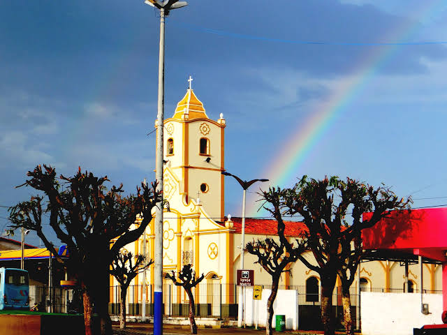

Celebramos nossa história de fé
Unidos em comunidade, agradecemos a Deus por mais um ano de caminhada paroquial.
Bem-vindo(a) à comunidade de Lagoa do Mato. Aqui, a oração, a liturgia e a caridade se encontram na alegria do Evangelho, fortalecendo a vida da nossa paróquia e da nossa família cristã.
Reserve estas datas para celebrar conosco o aniversário da paróquia e o tempo do Advento.
Unidos em comunidade, agradecemos a Deus por mais um ano de caminhada paroquial.
Iniciamos a preparação do coração para o Natal do Senhor.
Seguimos nossa caminhada de esperança e oração rumo ao Natal.
Celebramos a alegria que nasce da esperança e da presença de Deus.
Concluímos a preparação para acolher o nascimento de Jesus.
O Advento termina na véspera do Natal, quando nos reunimos para celebrar a esperança.
Um tempo de espera, esperança e preparação para acolher Cristo.
Quatro semanas para renovar a fé e preparar o coração para o Natal.
História, símbolos e formas de viver o Advento.

Neste ano, comemoramos o aniversário de 22 anos da Paróquia Nossa Senhora do Carmo com alegria e gratidão.
Conhecer nossa história
A comunidade é convidada a preparar o coração para acolher Cristo com esperança, oração e gestos concretos de amor.
Explorar o Advento
A comunidade será convidada a celebrar a Eucaristia em um ambiente de oração, música e encontro fraterno.
A Palavra que acompanha a comunidade hoje.
A liturgia do dia será exibida em breve.
A liturgia do dia será exibida em breve.
A liturgia do dia será exibida em breve.
A liturgia do dia será exibida em breve.
Santa Missa
Terço das Mulheres
Terço dos Homens
Terço das Crianças
Adoração ao Santíssimo
Atendimento paroquial
O povoado nasce junto à antiga lagoa que deu nome à região, e a fé dos primeiros moradores começa a se organizar em torno da devoção a Nossa Senhora do Carmo.
Antônio Honorato da Silva doa terras e inicia a construção da primeira capela, depois benzida em uma celebração que marca a semente da comunidade paroquial.
Pela Diocese de Quixadá, a comunidade passa a ser oficialmente paróquia, fortalecendo a evangelização e a vida sacramental em toda a região.
A Paróquia mantém viva a tradição, acolhendo famílias, jovens, catequistas e fiéis em celebrações, pastorais e ações de serviço à comunidade.
Conheça os párocos e as pessoas que ajudaram a construir a história da Paróquia Nossa Senhora do Carmo.

Pároco da Paróquia Nossa Senhora do Carmo
Com dedicação pastoral, acolhimento e zelo missionário, o padre guia a comunidade em oração, catequese e serviço, fortalecendo a vida espiritual da paróquia e da família cristã.
Sua contribuição sustenta a comunidade, a catequese, a liturgia, a manutenção da igreja e os serviços pastorais que acolhem famílias em oração e caridade.
“Deus ama quem dá com alegria.” — 2 Cor 9,7
Contribuição solidária que sustenta a vida paroquial e a missão evangelizadora.
Formação de crianças, jovens e adultos na fé, na liturgia e na vida cristã.
Celebrações centradas na Palavra, na Eucaristia e na vida sacramental da comunidade.
Oração, fraternidade e testemunho de fé no percurso diário com Maria.
Espaço de acolhimento, formação e serviço para jovens e adolescentes da paróquia.